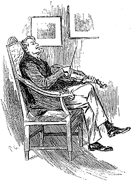
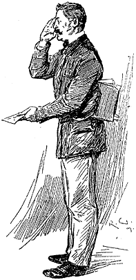

We met next day as he had arranged and inspected the rooms at No. 221B, Baker Street, of which he had spoken at our meeting. They consisted of a couple of comfortable bedrooms and a single large airy sitting-room, cheerfully furnished, and illuminated by two broad windows. So desirable in every way were the apartments, and so moderate did the terms seem when divided between us, that the bargain was concluded upon the spot, and we at once entered into possession. That very evening I moved my things round from the hotel, and on the following morning Sherlock Holmes followed me with several boxes and portmanteaus. For a day or two we were busily employed in unpacking and laying out our property to the best advantage. That done, we gradually began to settle down and to accommodate ourselves to our new surroundings.
Holmes was certainly not a difficult man to live with. He was quiet in his ways, and his habits were regular. It was rare for him to be up after ten at night, and he had invariably breakfasted and gone out before I rose in the morning. Sometimes he spent his day at the chemical laboratory, sometimes in the dissecting rooms, and occasionally in long walks, which appeared to take him into the lowest portions of the city. Nothing could exceed his energy when the working fit was upon him; but now and again a reaction would seize him, and for days on end he would lie upon the sofa in the sitting-room, hardly uttering a word or moving a muscle from morning to night. On these occasions I have noticed such a dreamy, vacant expression in his eyes, that I might have suspected him of being addicted to the use of some narcotic, had not the temperance and cleanliness of his whole life forbidden such a notion.
As the weeks went by, my interest in him and my curiosity as to his aims in life gradually deepened and increased. His very person and appearance were such as to strike the attention of the most casual observer. In height he was rather over six feet, and so excessively lean that he seemed to be considerably taller. His eyes were sharp and piercing, save during those intervals of torpor to which I have alluded; and his thin, hawk-like nose gave his whole expression an air of alertness and decision. His chin, too, had the prominence and squareness which mark the man of determination. His hands were invariably blotted with ink and stained with chemicals, yet he was possessed of extraordinary delicacy of touch, as I frequently had occasion to observe when I watched him manipulating his fragile philosophical instruments.
The reader may set me down as a hopeless busybody, when I confess how much this man stimulated my curiosity, and how often I endeavoured to break through the reticence which he showed on all that concerned himself. Before pronouncing judgment, however, be it remembered, how objectless was my life, and how little there was to engage my attention. My health forbade me from venturing out unless the weather was exceptionally genial, and I had no friends who would call upon me and break the monotony of my daily existence. Under these circumstances, I eagerly hailed the little mystery which hung around my companion, and spent much of my time in endeavouring to unravel it.
He was not studying medicine. He had himself, in reply to a question, confirmed Stamford's opinion upon that point. Neither did he appear to have pursued any course of reading which might fit him for a degree in science or any other recognized portal which would give him an entrance into the learned world. Yet his zeal for certain studies was remarkable, and within eccentric limits his knowledge was so extraordinarily ample and minute that his observations have fairly astounded me. Surely no man would work so hard or attain such precise information unless he had some definite end in view. Desultory readers are seldom remarkable for the exactness of their learning. No man burdens his mind with small matters unless he has some very good reason for doing so.
His ignorance was as remarkable as his knowledge. Of contemporary literature, philosophy and politics he appeared to know next to nothing. Upon my quoting Thomas Carlyle, he enquired in the naivest way who he might be and what he had done. My surprise reached a climax, however, when I found incidentally that he was ignorant of the Copernican Theory and of the composition of the Solar System. That any civilized human being in this nineteenth century should not be aware that the earth travelled round the sun appeared to be to me such an extraordinary fact that I could hardly realize it.
"You appear to be astonished," he said, smiling at my expression of surprise. "Now that I do know it I shall do my best to forget it."
"To forget it!"
"You see," he explained, "I consider that a man's brain originally is like a little empty attic, and you have to stock it with such furniture as you choose. A fool takes in all the lumber of every sort that he comes across, so that the knowledge which might be useful to him gets crowded out, or at best is jumbled up with a lot of other things, so that he has a difficulty in laying his hands upon it. Now the skilful workman is very careful indeed as to what he takes into his brain attic. He will have nothing but the tools which may help him in doing his work, but of these he has a large assortment, and all in the most perfect order. It is a mistake to think that that little room has elastic walls and can distend to any extent. Depend upon it there comes a time when for every addition of knowledge you forget something that you knew before. It is of the highest importance, therefore, not to have useless facts elbowing out the useful ones."
"But the Solar System!" I protested.
"What the deuce is it to me?" he interrupted impatiently; "you say that we go round the sun. If we went round the moon it would not make a pennyworth of difference to me or to my work."
I was on the point of asking him what that work might be, but something in his manner showed me that the question would be an unwelcome one. I pondered over our short conversation, however, and endeavoured to draw my deductions from it. He said that he would acquire no knowledge which did not bear upon his object. Therefore all the knowledge which he possessed was such as would be useful to him; I enumerated in my own mind all the various points upon which he had shown me that he was exceptionally well-informed. I even took a pencil and jotted them down. I could not help smiling at the document when I had completed it. It ran in this way:—
Sherlock Holmes — his limits.
- Knowledge of literature.—Nil.
- Knowledge of Philosophy.—Nil.
- Knowledge of Astronomy.—Nil.
- Knowledge of Politics.—Feeble.
- Knowledge of Botany.—Variable. Well up in belladonna, opium, and poisons generally. Knows nothing of practical gardening.
- Knowledge of Geology.—Practical, but limited. Tells at a glance different soils from each other. After walks has shown me spashes upon his trousers, and told me by their colour and consistence in what part of London he had received them.
- Knowledge of Chemistry.—Profound.
- Knowledge of Anatomy.—Accurate, but unsystematic.
- Knowledge of Sensational Literature.—Immense. He appears to know every detail of every horror perpetrated in the century.
- Plays the violin well.
- Is an expert singlestick player, boxer, and swordsman.
- Has a good practical knowledge of British law.
When I got so far in my list I threw it into the fire in despair. "If I could only find what the fellow is driving at by reconciling all these accomplishments, and discovering a calling which needs them all," I said to myself, "I may as well give up the attempt at once."
I see that I have alluded above to his powers upon the violin. These were very remarkable, but as eccentric as all his other accomplishments. That he could play pieces, and difficult pieces, I knew well, because at my request he has played me some of Mendelssohn's Lieder, and other favourites. When left to himself, however, he would seldom produce any music or attempt any recognised air. Leaning back in his arm-chair of an evening, he would close his eyes and scrape carelessly at the fiddle which was thrown across his knee. Sometimes the chords were sonorous and melancholy. Occasionally they were fantastic and cheerful. Clearly they reflected the thoughts which possessed him, but whether the music aided those thoughts, or whether the playing was simply the result of a whim or fancy, was more than I could determine. I might have rebelled against these exasperating solos had it not been that he usually terminated them by playing in quick succession a whole series of my favourite airs as a slight compensation for the trial upon my patience.
During the first week or so we had no callers, and I had begun to think that my companion was as friendless a man as I was myself. Presently, however, I found that he had many acquaintances, and those in the most different classes of society. There was one little sallow, rat-faced, dark-eyed fellow, who was introduced to me as Mr. Lestrade, and who came three or four times in a single week. One morning a young girl called, fashionably dressed, and stayed for half an hour or more. The same afternoon brought a grey-headed, seedy visitor, looking like a Jew pedlar, who appeared to me to be much excited, and who was closely followed by a slip-shod elderly woman. On another occasion an old white-haired gentleman has an interview with my companion; and on another, a railway porter in his velveteen uniform. When any of these non-descript individuals put in an appearance, Sherlock Holmes used to beg for the use of the sitting-room, and I would retire to my bedroom. He always apologized to me for putting me to this inconvenience. "I have to use this room as a place of business," he said, "and these people are my clients." Again I had an opportunity of asking him a point-blank question, and again my delicacy prevented me from forcing another man to confide in me. I imagined at the time that he had some strong reason for not alluding to it, but he soon dispelled the idea by coming round to the subject of his own accord.
It was upon the 4th of March, as I have good reason to remember, that I rose somewhat earlier than usual, and found that Sherlock Holmes had not yet finished his breakfast. The landlady had become so accustomed to my late habits that my place had not been laid nor my coffee prepared. With the unreasonable petulance of mankind I rang the bell and gave a curt intimation that I was ready. Then I picked up a magazine from the table and attempted to while away the time with it, while my companion munched silently at his toast. One of the articles had a pencil mark at the heading, and I naturally began to run my eye through it.
Its somewhat ambitious title was "The Book of Life," and it attempted to show how much an observant man might learn by an accurate and systematic examination of all that came in his way. It struck me as being a remarkable mixture of shrewdness and of absurdity. The reasoning was close and intense, but the deductions appeared to me to be far-fetched and exaggerated. The writer claimed by a momentary expression, a twitch of a muscle or a glance of an eye, to fathom a man's inmost thoughts. Deceit, according to him, was an impossibility in the case of one trained to observation and analysis. His conclusions were as infallible as so many propositions of Euclid. So startling would his results appear to the uninitiated that until they learned the processes by which he had arrived at them they might well consider him as a necromancer.
'"From a drop of water," said the writer, "a logician could infer the possibility of an Atlantic or a Niagara without having seen or heard of one of the other. So all life is a great chain, the nature of which is known whenever we are shown a single link of it. Like all other arts, the Science of Deduction and Analysis is one which can only be acquired by long and patient study, nor is life long enough to allow any mortal to attain the highest possible perfection in it. Before turning to those moral and mental aspects of the matter which present the greatest difficulties, let the inquirer begin by mastering more elementary problems. Let him on meeting a fellow-mortal, learn at a glance to distinguish the history of the man, and the trade or profession to which he belongs. Puerile as such an exercise may seem, it sharpens the faculties of observation, and teaches one where to look and what to look for. By a man's finger-nails, by his coat-sleeve, by his boot, by his trouser-knees, by the callosities of his forefinger and thumb, by his expression, by his shirt-cuffs—by each of these things a man's calling is plainly revealed. That all united should fail to enlighten the competent inquirer in any case is almost inconceivable."
"What ineffable twaddle!" I cried, slapping the magazine down on the table; "I never read such rubbish in my life."
"What is it?" asked Sherlock Holmes.
"Why this article," I said, pointing at it with my egg-spoon as I sat down to my breakfast.
"I see that you have read it since you have marked it. I don't deny that it is smartly written. It irritates me though. It is evidently the theory of some arm-chair lounger who evolves all these neat little paradoxes in the seclusion of his own study. It is not practical. I should like to see him clapped down in a third-class carriage on the Underground, and asked to give the trades of all his fellow-travellers. I would lay a thousand to one against him."
"You would lose your money," Holmes remarked calmly. "As for the article, I wrote it myself."
"You!"
"Yes; I have a turn both for observation and for deduction. The theories which I have expressed there, and which appear to you to be so chimerical, are really extremely practical—so practical that I depend upon them for my bread and cheese."
"And how?" I asked involuntarily.
"Well, I have a trade of my own. I suppose I am the only one in the world. I'm a consulting detective, if you can understand what that is. Here in London we have lots of Government detectives and lots of private ones. When these fellows are at fault, they come to me, and I manage to put them on the right scent. They lay all the evidence before me, and I am generally able, by the hold of my knowledge of the history of crime, to set them straight. There is a strong family resemblance about misdeeds, and if you have all the details of a thousand at your finger ends, it is odd if you can't unravel the thousand and first. Lestrade is a well-known detective. He got himself into a fog recently over a forgery case, and that was what brought him here."
"And these other people?"
"They are mostly sent on by private inquiry agencies. They are all people who are in trouble about something, and want a little enlightening. I listen to their story, they listen to my comments, and then I pocket my fee."
"But do you mean to say," I said, "that without leaving your room you can unravel some know which other men can make nothing of, although they have seen every detail for themselves?"
"Quite so. I have a kind of intuition that way. Now and again a case turns up which is a little more complex. Then I have to bustle about and see things with my own eyes. You see I have a lot of special knowledge which I apply to the problem, and which facilitates matters wonderfully. Those rules of deduction laid down in that article which aroused your scorn are invaluable to me in practical work. Observation with me is second nature. You appeared to be surprised when I told you, on our first meeting, that you had come from Afghanistan."
"You were told, no doubt."
"Nothing of the sort. I knew you came from Afghanistan. From long habit the train of thoughts ran so swiftly through my mind that I arrived at the conclusion without being conscious of intermediate steps. There were such steps, however. The train of reasoning ran, 'Here is a gentleman of the medical type, but with the air of a military man. Clearly an army doctor, then. He has just come from the tropics, for his face is dark, and that is not the natural tint of his skin, for his wrists are fair. He has undergone hardship and sickness, as his haggard face says clearly. His left arm has been injured: He holds it in a stiff and unnatural manner. Where in the tropics could an English army doctor have seen much hardship and got his arm wounded? Clearly in Afghanistan.' The whole train of thought did not occupy a second. I then remarked that you came from Afghanistan, and you were astonished."
"It is simple enough as you explain it," I said smiling. "You remind me of Edgar Allen Poe's Dupin. I had no idea that such individuals did exist outside of stories."
Sherlock Holmes rose and lit his pipe. "No doubt you think that you are complimenting me in comparing me to Dupin," he observed. "Now, in my opinion, Dupin was a very inferior fellow. That trick of his of breaking in on his friends' thoughts with an apropos remark after a quarter of an hour's silence is really very showy and superficial. He had some analytical genius, no doubt; but he was by no means such a phenomenon as Poe appeared to imagine."
"Have you read Gaboriau's works?" I asked. "Does Lecoq come up to your idea of a detective?"
Sherlock Holmes sniffed sardonically. "Lecoq was a miserable bungler," he said, in an angry voice; "he had only one thing to recommend him, and that was his energy. That book made me positively ill. The question was how to identify an unknown prisoner. I could have done it in twenty-four hours. Lecoq took six months or so. It might be made a text-book for detectives to teach them what to avoid."
I felt rather indignant at having two characters whom I had admired treated in this cavalier style. I walked over to the window, and stood looking out into the busy street. "This fellow may be very clever," I said to myself, "but he is certainly very conceited."
"There are no crimes and no criminals in these days," he said, querulously. "What is the use of having brains in our profession. I know well that I have it in me to make my name famous. No man lives or has ever lived who has brought the same amount of study and of natural talent to the detection of crime which I have done. And what is the result? There is no crime to detect, or, at most, some bungling villainy with a motive so transparent that even a Scotland Yard official can see through it."
I was still annoyed at his bumptious style of conversation; I thought it best to change the topic.
"I wonder what that fellow is looking for?" I asked, pointing to a stalwart, plainly-dressed individual who was walking slowly down the other side of the street, looking anxiously at the numbers. He had a large blue envelope in his hand, and was evidently the bearer of a message.
"You mean the retired sergeant of Marines," said Sherlock Holmes.
"Brag and bounce!" thought I to myself. "He knows that I cannot verify his guess."
The thought had hardly passed through my mind when the man whom we were watching caught sight of the number on our door, and ran rapidly across the roadway. We heard a loud knock, a deep voice below, and heavy steps ascending the stairs.
"For Mr. Sherlock Holmes," he said, stepping into the room and handing my friend the letter.
Here was an opportunity of taking the conceit out of him. He little thought of this when he made that random shot. "May I ask, my lad," I said, in the blandest voice, "what your trade may be?"
"Commissionaire, sir," he said, gruffly. "Uniform away for repairs."
"And you were?" I asked, with a slightly malicious glance at my companion.
"A sergeant, sir, Royal Marine Light Infantry, sir. No answer? Right, sir."
He clicked his heels together, raised his hand in a salute, and was gone.